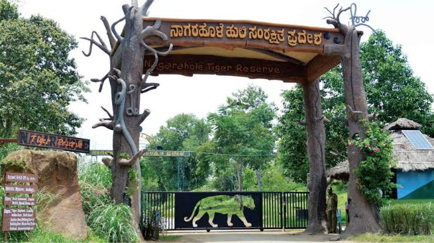
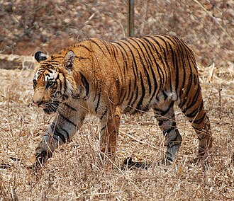

WELCOME TO NAGARAHOLE
Nagarhole National Park

Nagarahole National Park is a national park located in Kodagu district and Mysore district in Karnataka, India.[1] This park was declared the 37th Tiger Reserve of India in 2003. It is part of the Nilgiri Biosphere Reserve. The Western Ghats Nilgiri Sub-Cluster of 6,000 km2 (2,300 sq mi), including all of Nagarhole National Park, is under consideration by the UNESCO World Heritage Committee for selection as a World Heritage Site.[2] The park has rich forest cover, small streams, hills, valleys and waterfalls, and populations of Bengal tiger, gaur, Indian elephant, Indian leopard, chital and Sambar deer.
Geography
The park ranges the foothills of the Western Ghats spreading down the Brahmagiri hills and south towards Kerala state. It lies between the latitudes 12°15'37.69"N and longitudes 76°17'34.4"E. The park covers 847.98 km2 (327.41 sq mi) located to the north-west of Bandipur National Park. The Kabini reservoir separates the two parks. Elevation of the park ranges from 700 to 960 m (2,300 to 3,150 ft).[3] Its water sources include the Lakshmmantirtha river, Sarati Hole, Nagar Hole, Balle Halla, Kabini River, four perennial streams, 47 seasonal streams, four small perennial lakes, 41 artificial tanks, several swamps, Taraka Dam and the Kabini reservoir.[4]
Climate and ecology
The park receives an annual rainfall of 1,440 mm (57 in)
History
The park derives its name from nagara, meaning snake and hole, referring to streams. The park was an exclusive hunting reserve of the kings of the Wodeyar dynasty, the former rulers of the Kingdom of Mysore. It was set up in 1955 as a wildlife sanctuary. It was upgraded into a national park in 1983. The park was declared a tiger reserve in 2003[6] and its area was increased to 643.39 km2 (248.41 sq mi). In 2012, the reserve was expanded to a total area of 847.98 km2 (327.41 sq mi).
